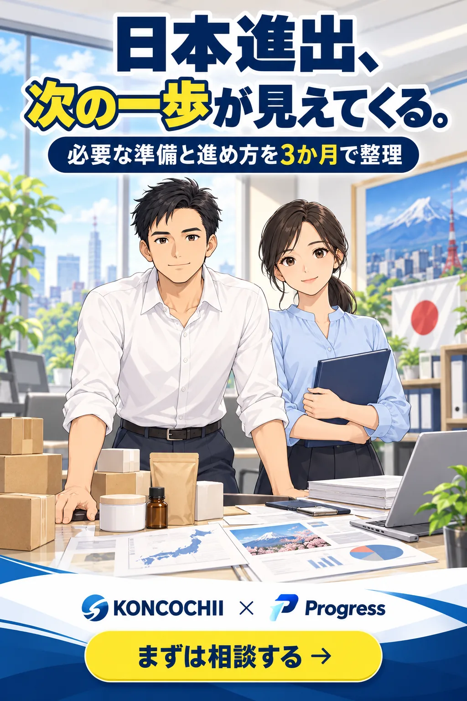
ベトナムで商品づくりに取り組むミン。日本市場にも挑戦したいという思いは、日に日に強くなっていた。
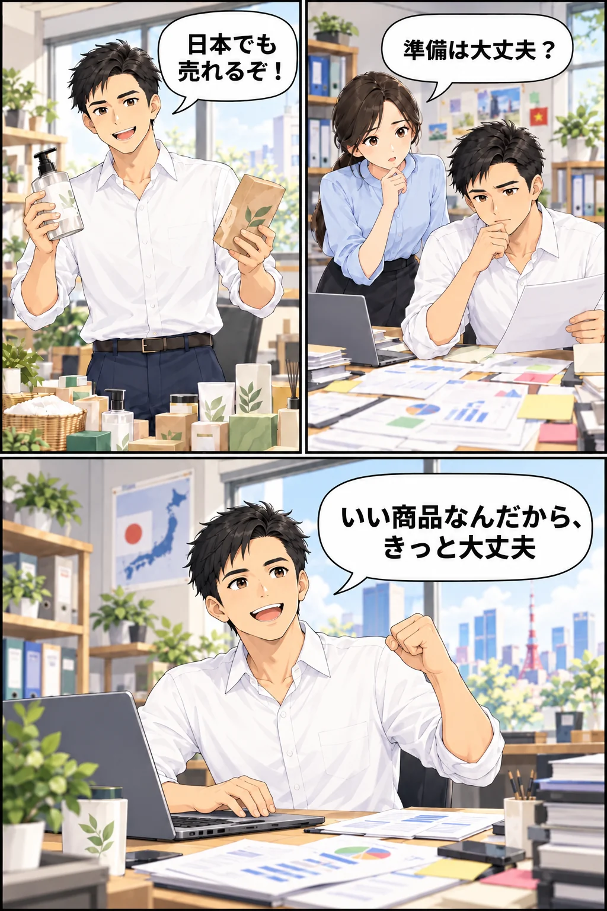
しかし、商品の良さだけでは進まなかった。必要な準備や確認事項は、想像以上に多かった。
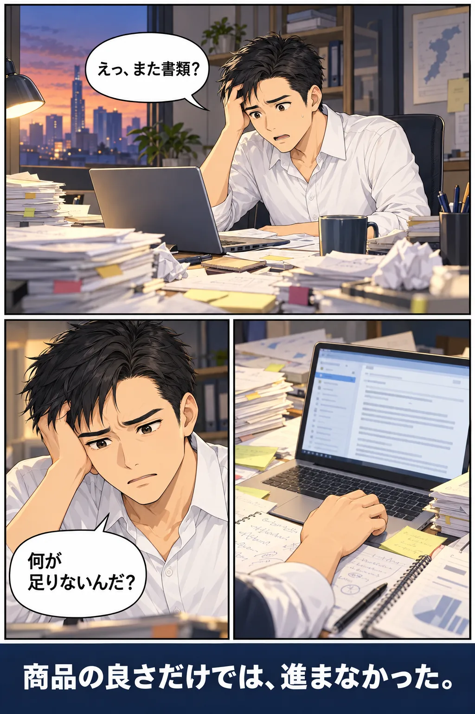
調べても、考えても、次の一手が見えない。計画は少しずつ止まり始める。
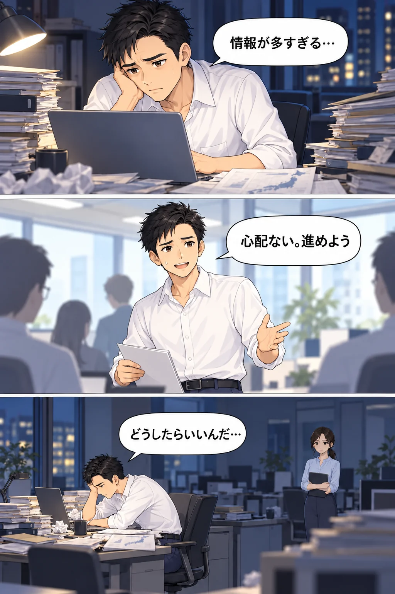
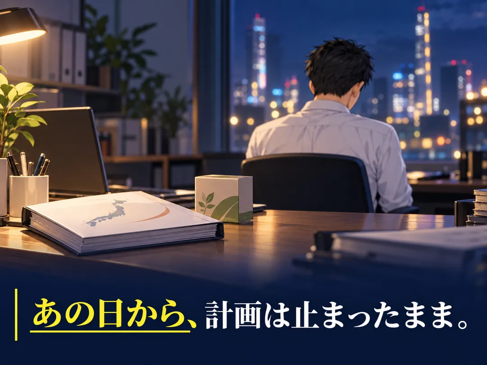
そんなとき、身近な人のひと言が、新しい選択肢につながった。
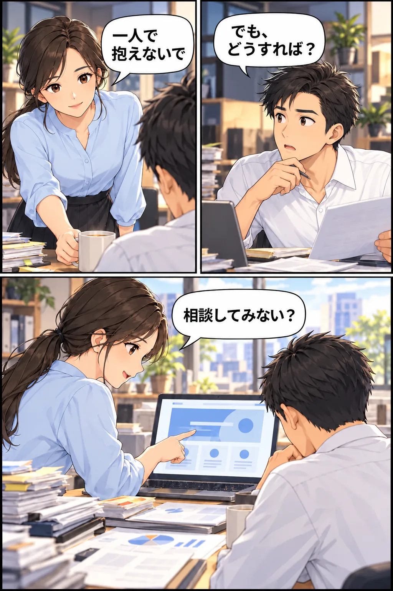
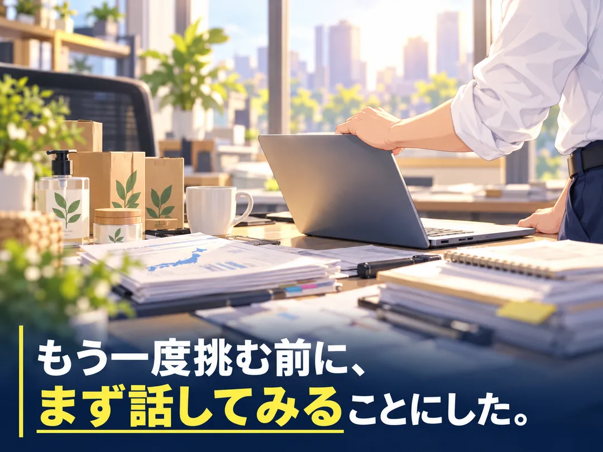
日本とベトナム、双方の視点で状況を見直す。まずは話してみることから始まった。
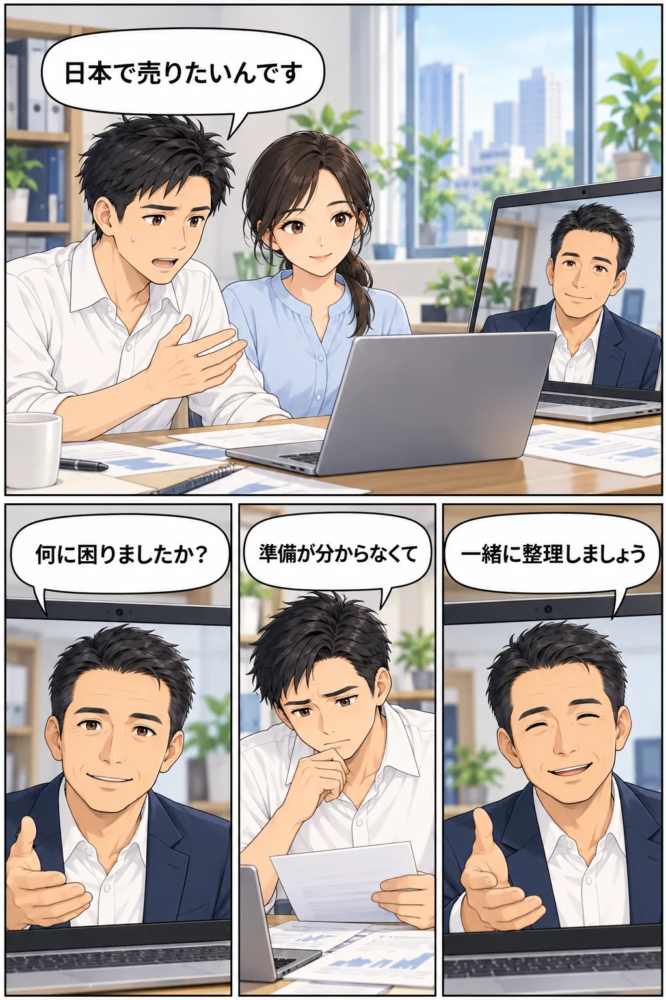
一緒に進める相手を知ることも、大切な準備のひとつ。
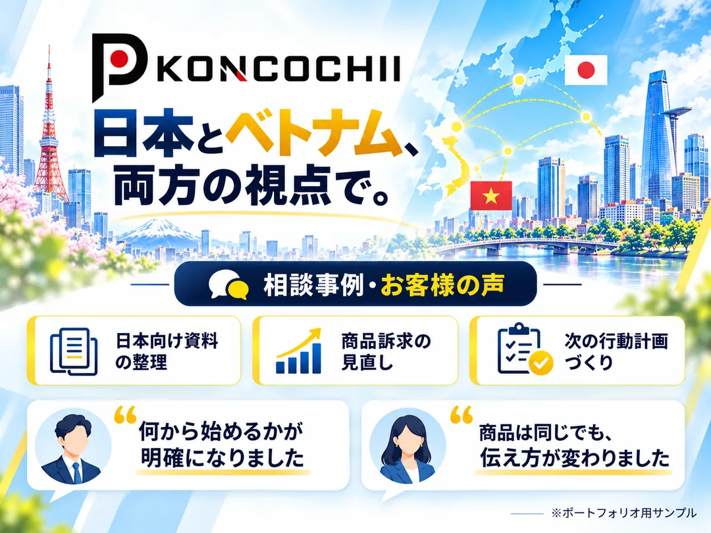
一つずつ確認し、優先順位を整理していく。3か月で、次の行動が少しずつ見えてくる。
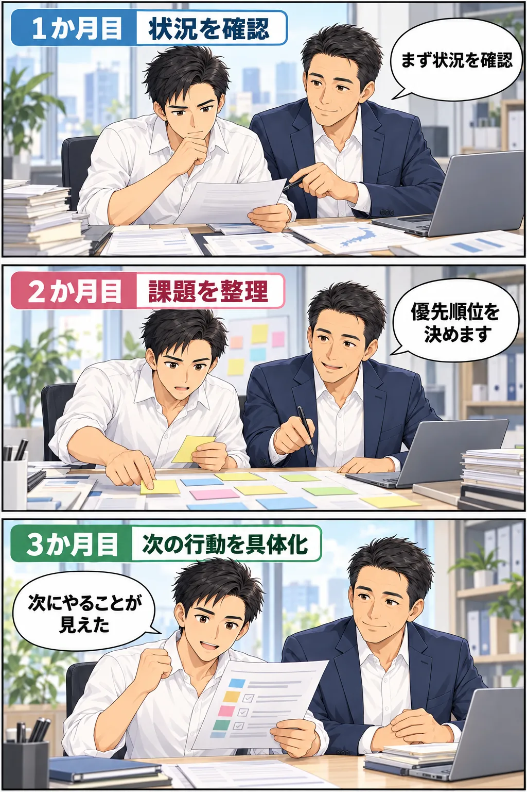
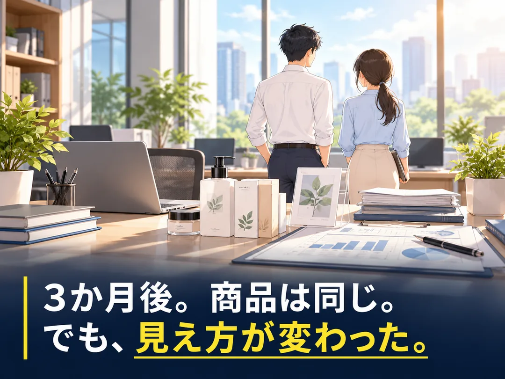
次にやることが分かれば、前向きな一歩を自分で決められる。
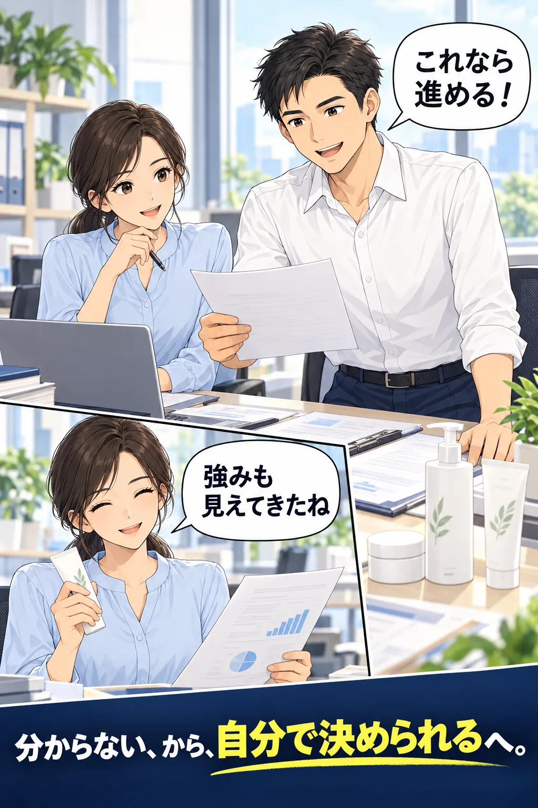
日本進出を決める前に、相談から始めることもできます。
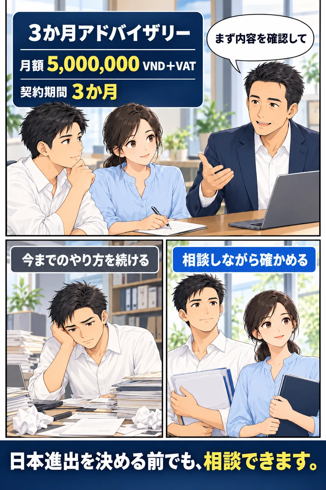
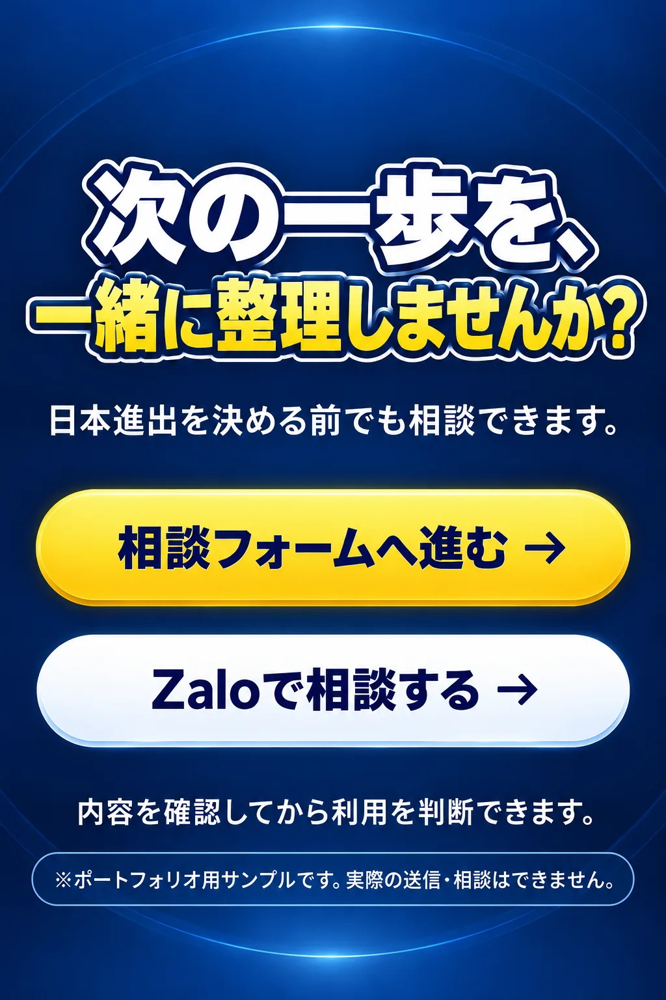